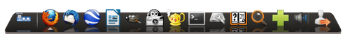
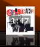

Avant Window Navigator
Dieser Artikel wurde für die folgenden Ubuntu-Versionen getestet:
Dieser Artikel ist mit keiner aktuell unterstützten Ubuntu-Version getestet! Bitte diesen Artikel testen und das getestet-Tag entsprechend anpassen.
Zum Verständnis dieses Artikels sind folgende Seiten hilfreich:
Der Avant Window Navigator  (AWN) ist eine dekorative, animierte Leiste (Dock) am unteren Bildschirmrand, welche die Funktionalität einer Fensterleiste mit jener einer Schnellstartleiste vereint. Das Programm wurde von Neil J. Patel entwickelt und steht unter der GNU GPL.
(AWN) ist eine dekorative, animierte Leiste (Dock) am unteren Bildschirmrand, welche die Funktionalität einer Fensterleiste mit jener einer Schnellstartleiste vereint. Das Programm wurde von Neil J. Patel entwickelt und steht unter der GNU GPL.
AWN ist durch viele Applets und Plugins erweiterbar. Die Applets können Funktionen des Gnome-Panels ersetzen und erweitern, wobei die meisten Applets bei der Installation direkt mitinstalliert werden. Einige ausgewählte Plugins werden im weiteren Verlauf des Artikels kurz vorgestellt.
Die Verwendung des Programms setzt den Betrieb eines Composite-Manager voraus. Mit AWN vergleichbar sind beispielsweise Plank, Docky oder Cairo-Dock.

Hinweis:
Da es in Kombination mit KDE Probleme geben kann, sollte man dort besser die entsprechenden Plasma-Applets nutzen.
Installation¶

AWN lässt sich bis Ubuntu 12.04 direkt aus den offiziellen Paketquellen installieren [1]:
avant-window-navigator (universe)
 mit apturl
mit apturl
Paketliste zum Kopieren:
sudo apt-get install avant-window-navigator
sudo aptitude install avant-window-navigator
Benutzung¶
Nach der Installation kann man den AWN bei Ubuntu-Varianten mit einem Anwendungsmenü über "Zubehör -> Avant Window Navigator" starten [2]. Anschließend erscheint am unteren Bildschirmrand eine neue Dockleiste. Einstellungen können über einen Rechtsklick auf die Leiste oder "System -> Awn Manager" vorgenommen werden.
Um AWN beim Start des Systems automatisch zu starten, kann man dies direkt im AWN-Manager einstellen oder den Befehl avant-window-navigator in den Autostart [3] legen.
Will man ganz auf das GNOME Panel verzichten, kann man auch den AWN statt dessen starten lassen. Dazu muss GConf dementsprechend Konfigurieren und der Schlüssel /desktop/gnome/session/required_components/panel auf avant-window-navigator gesetzt werden.
Ausgewählte Plugins¶
DockbarX¶
DockbarX ersetzt die Taskleiste und erweitert sie um viele Features, die aus der Windows 7 Taskbar bekannt sind (Bild) .
Dazu installiert man DockbarX und das DockbarX AWN Applet. Danach ist DockbarX im AWN als Plugin verfügbar. Über das GNOME-Menü
"Anwendungen -> Zubehör -> DockbarX Einstellungen"
kann man DockbarX umfangreich konfigurieren.
Pidgin¶
Das Pidgin-Plugin zeigt den Status des aktuellen Chatpartners an. Zuerst lädt man das entsprechende Paket aus dem AWN-Wiki herunter.
Nun erstellt man unter ~/.purple einen Unterordner mit dem Namen plugins (sofern dieser nicht bereits besteht). Anschließend wird die Datei pidgin_awn.so aus dem Archiv in dieses Verzeichnis extrahiert [7]. Nach einem Neustart von Pidgin kann man unter "Werkzeug Plugins" das "AWN Plugin" aktivieren.
Amarok¶
 Beim Amarok-Plugin wird das Cover der gespielten CD eingeblendet, sowie eine kleine Uhr, welche die verbleibende Zeit des Stückes angibt. Installiert wird das Plugin direkt in Amarok. Zunächst diese Datei  herunterladen und zwischenspeichern. Man startet Amarok und wählt über die Schaltflächen "Extras -> Skriptverwaltung -> Script installieren" aus. Nun aktiviert man das Skript, indem man links unter Allgemeine Skripte "awn-amarok" auswählt und dann auf ausführen drückt. Nach einem Neustart des Systems führt Amarok das Skript automatisch aus.
herunterladen und zwischenspeichern. Man startet Amarok und wählt über die Schaltflächen "Extras -> Skriptverwaltung -> Script installieren" aus. Nun aktiviert man das Skript, indem man links unter Allgemeine Skripte "awn-amarok" auswählt und dann auf ausführen drückt. Nach einem Neustart des Systems führt Amarok das Skript automatisch aus.
 Programmübersicht
Programmübersicht{kind=link}
- Erstellt mit Inyoka
-
 2004 – 2017 ubuntuusers.de • Einige Rechte vorbehalten
2004 – 2017 ubuntuusers.de • Einige Rechte vorbehalten
Lizenz • Kontakt • Datenschutz • Impressum • Serverstatus -
Serverhousing gespendet von